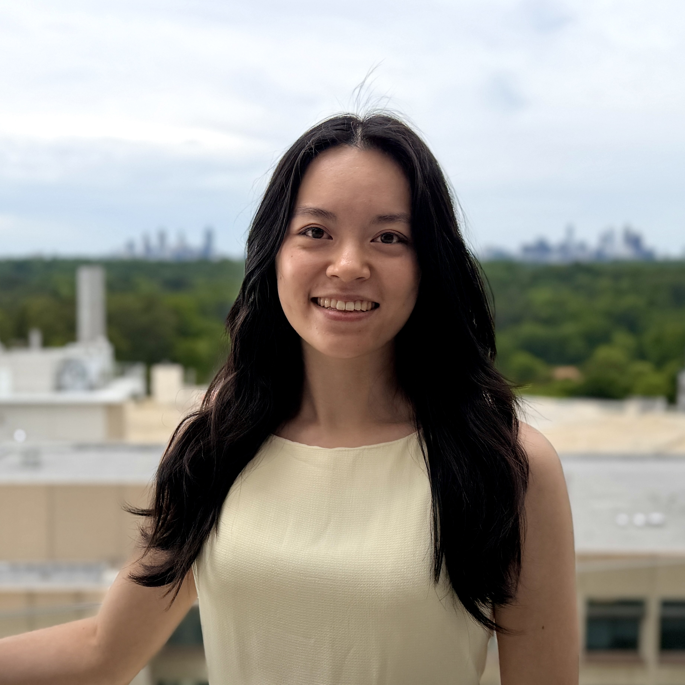

About
I received my undergraduate B.S. in Biology from Emory University this past December, where I built a strong foundation in biomedical science alongside a growing focus on data-driven approaches to understanding human health and disease. Over the past two years, I have been part of translational and clinical research labs spanning cardiology, hematology, and neuroscience, where I designed and executed experiments, processed biological and clinical datasets, and contributed to projects focused on disease mechanisms and potential therapeutic targets.
These experiences shaped my interest in how computational methods can generate predictive and actionable insights from experimental and clinical datasets. I am especially interested in how AI and data science can bridge experimental biology with clinical decision-making. For example, multi-omics and clinical datasets from cancer and neurorehabilitation research raise questions about how models can integrate heterogeneous data types to predict disease progression, treatment response, and patient stratification. I am interested in exploring how machine learning methods can not only analyze these datasets more efficiently, but also uncover biological structures that may not be visible through traditional approaches.
I am also curious about the potential for AI tools to streamline biomedical workflows, from automating feature extraction from imaging and sequencing data to improving signal detection in clinical datasets, or supporting hypothesis generation in early-stage research. Through CABS’s Data Science Summer Internship, I hope to deepen my experience applying these methods to the biotechnology and life science industry settings where analytical rigor directly informs impact. I am excited by the opportunity to work on problems that require integrating domain knowledge in biology with modern data science and AI tools to support more scalable, efficient, and insightful approaches to understanding human health.
Program interests
- Data-science directions: Computational Biology, Biostatics, Systems Pharmacology, Clinical Trial Design and Analysis, Drug Repurposing Prediction
- Drug-development stage: 🧫 3. Preclinical Development
- Programming level: Intermediate
- Tools and platforms: Capcut(https://www.capcut.com/), Cursor/VScode (https://github.com/ds4cabs/PharmaBioinfomatics/issues/78), Github Personal Website Development (https://github.com/), Develop program book using Adobe Expression, Design flyer using Canva (https://www.canva.com/)